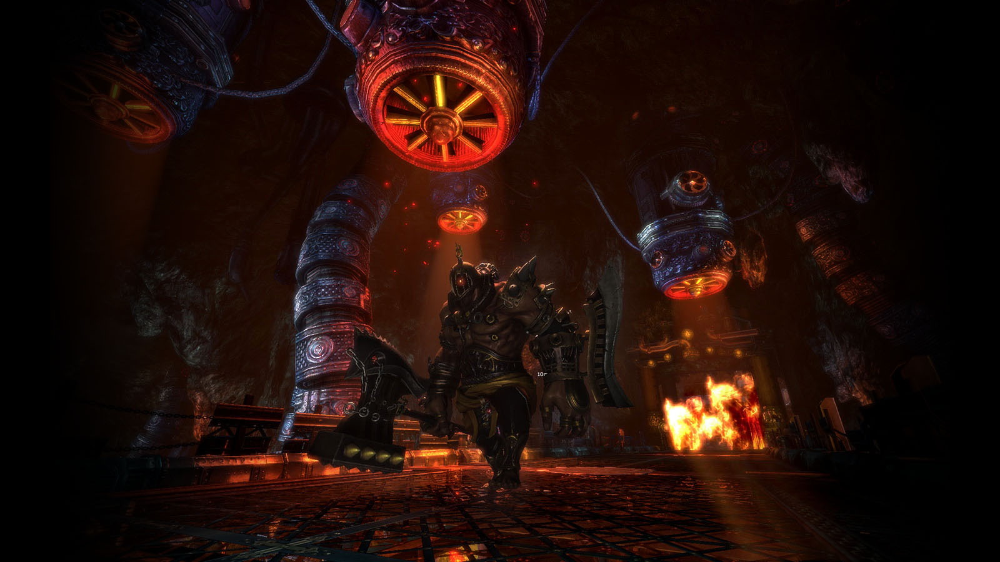
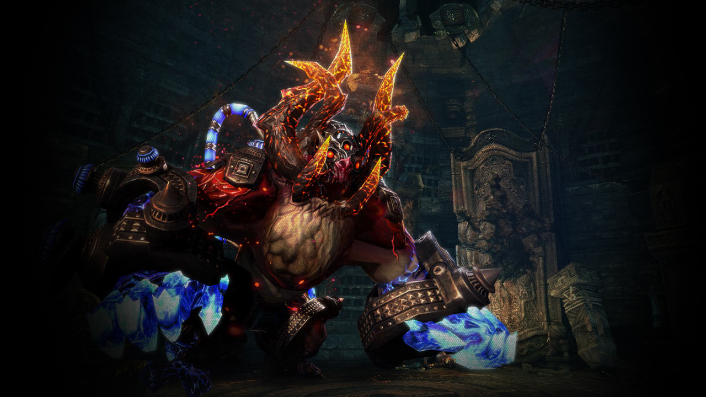
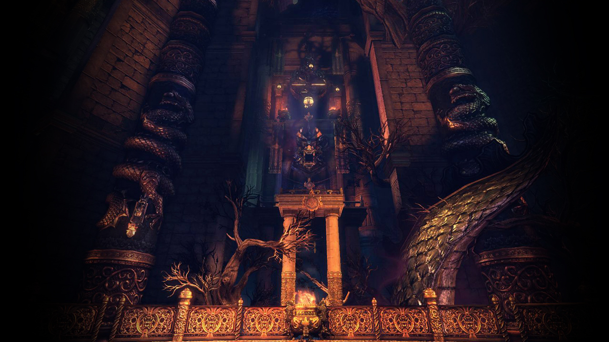
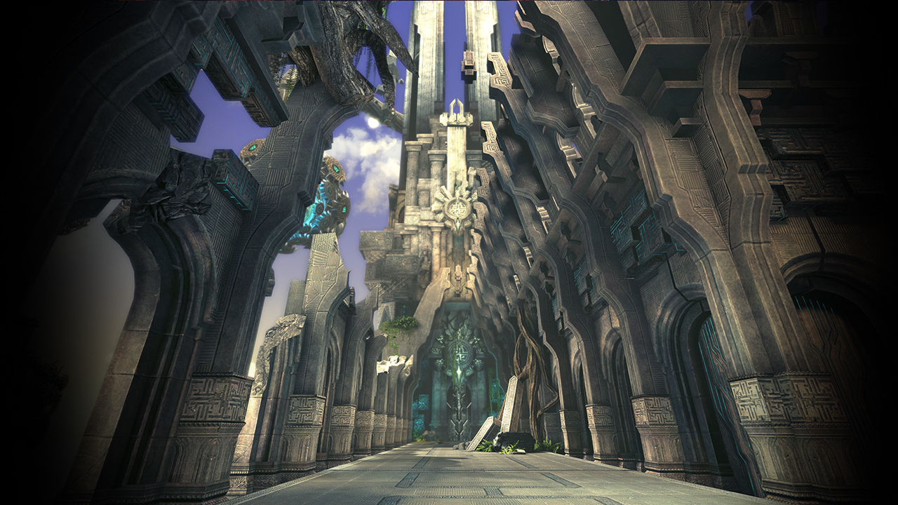
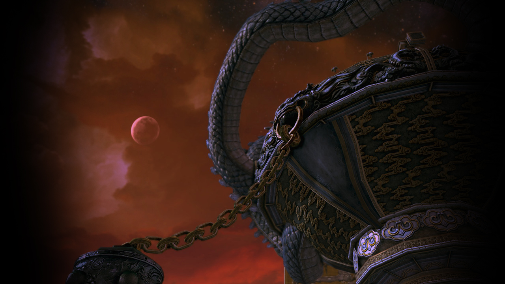
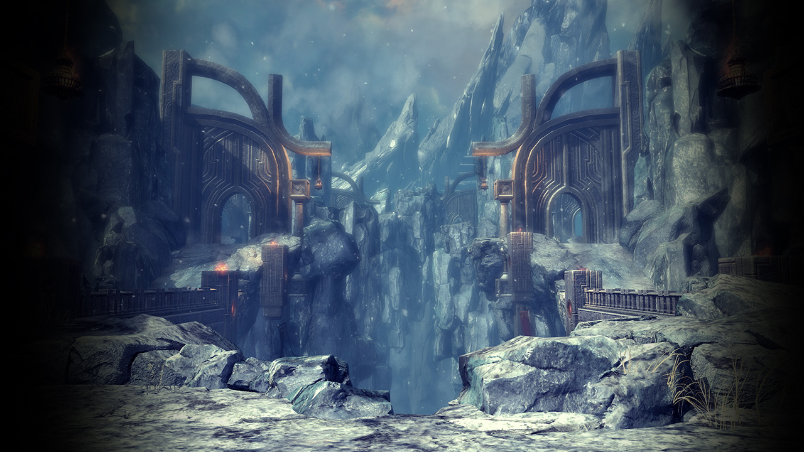
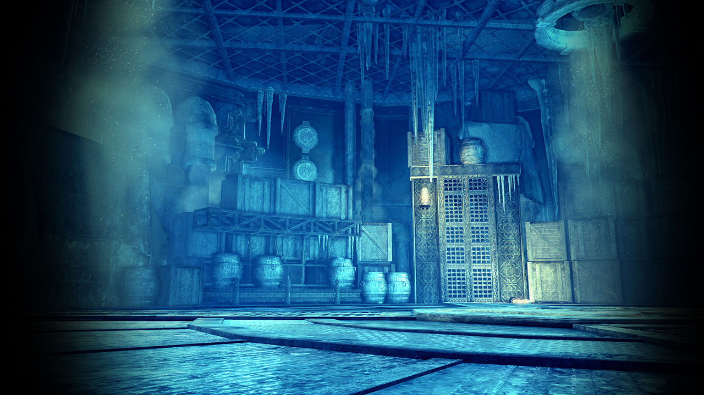
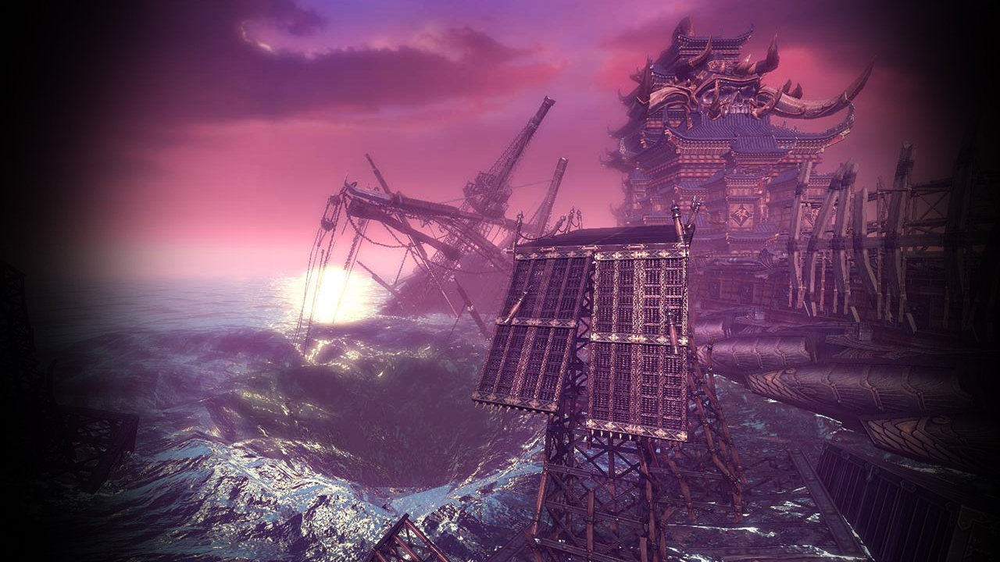
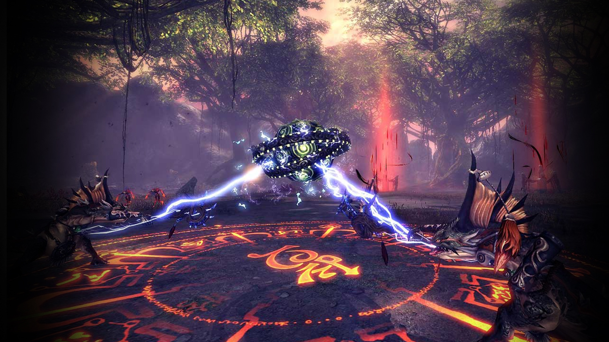

Naryu Foundryreorder
Naryu Foundryclose
Read more
6 It is recommended to have at least 650 AP before attempting this dungeon, it will be relatively difficult to recruit or join a party with anything lower than 600 AP. The party must be composed of at least one Force Master/Warlock/Summoner as the final boss requires to be rooted.
4 It is recommended to have at least 700 AP before attempting 4-member Naryu Foundry, as high DPS is needed to clear a certain boss and mini-boss. A coordinated 700 AP group is capable of clearing this but is recommended to have a Warlock and/or Destroyer/Blade Dancer for restrain damage. Same restrictions apply in the 4-member mode.
"A secret forge carved out of the mountains of Khanda Vihar where many believe the Ebondrake construct their destructive Black Pillars."
6 It is recommended to have at least 650 AP before attempting this dungeon, it will be relatively difficult to recruit or join a party with anything lower than 600 AP. The party must be composed of at least one Force Master/Warlock/Summoner as the final boss requires to be rooted.
4 It is recommended to have at least 700 AP before attempting 4-member Naryu Foundry, as high DPS is needed to clear a certain boss and mini-boss. A coordinated 700 AP group is capable of clearing this but is recommended to have a Warlock and/or Destroyer/Blade Dancer for restrain damage. Same restrictions apply in the 4-member mode.

Desolate Tombreorder
Desolate Tombclose
Read more
6 It is recommended to have at least 550 AP before attempting this dungeon, it will be relatively difficult to recruit or join a party with anything lower than 520 AP.
4 It is recommended to have at least 600 AP before attempting 4-member Desolate Tomb. 4-member Desolate Tomb is doable with less AP but requires a lot of experience and is recommended that you gear yourself properly before attempting.
"Once known as the Tomb of the Exiles. Talus Army engineers have ventured here to study ancient automations."
6 It is recommended to have at least 550 AP before attempting this dungeon, it will be relatively difficult to recruit or join a party with anything lower than 520 AP.
4 It is recommended to have at least 600 AP before attempting 4-member Desolate Tomb. 4-member Desolate Tomb is doable with less AP but requires a lot of experience and is recommended that you gear yourself properly before attempting.

Ebondrake Citadelreorder
Ebondrake Citadelclose
Read more
"Ebondrake cultists have subjected Bonemask tribespeople to cruel experiments, destroying their minds and breaking their spirits."

Sundered Nexusreorder
Sundered Nexusclose
Read more
"A place where the secrets of the Naryu are hidden. The Talus Army is trying to recover powerful artifacts."

Heaven's Mandatereorder
Heaven's Mandateclose
Read more
"An altar constructed by Jinsoyun's followers for the Divine Mandate Ritual, an ancient ceremony used to confirm the rightful emporer."

Sogun's Lamentreorder
Sogun's Lamentclose
Read more
"The palace of Asura, who plots to overthrow of the Earthen Realm from upon an icy throne."

Cold Storagereorder

Shattered Mastsreorder

Gloomdross Incursionreorder